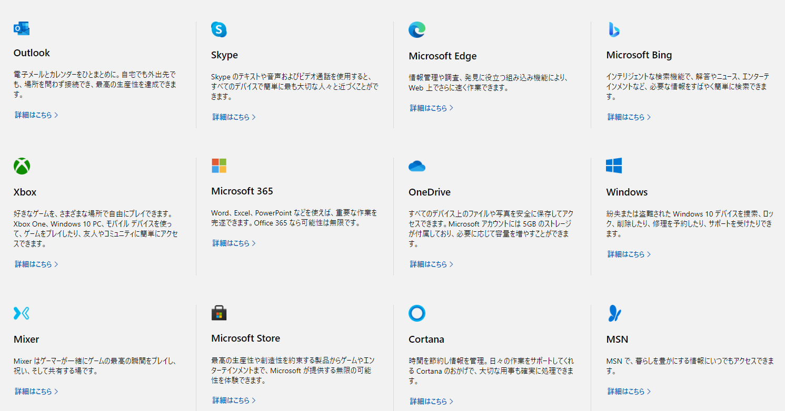
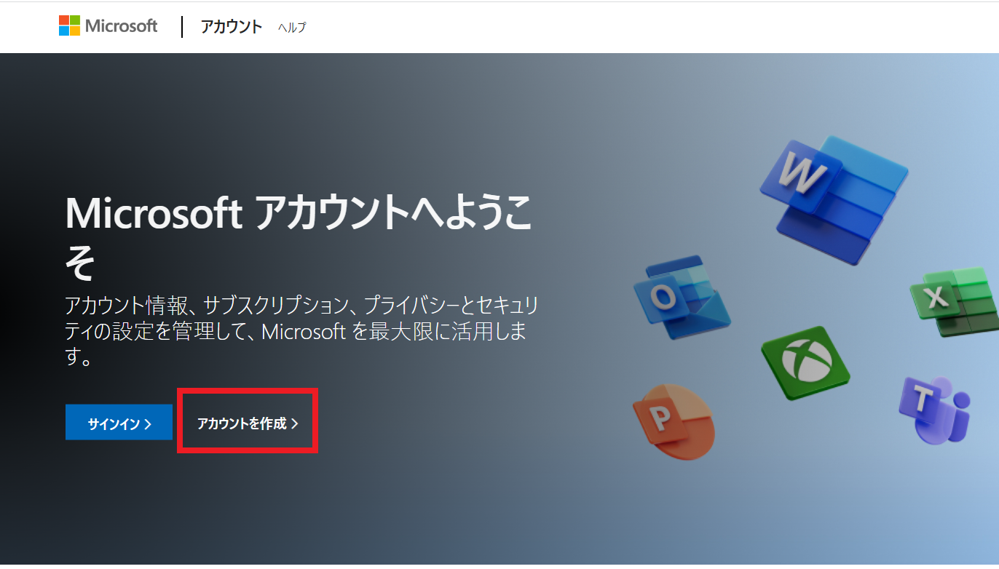
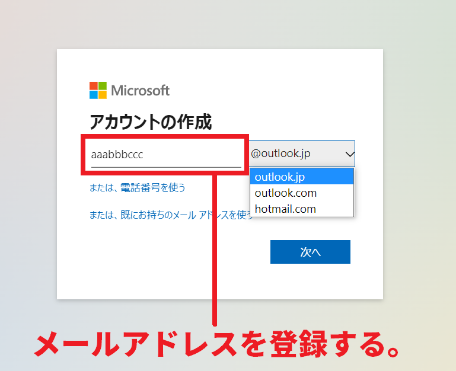
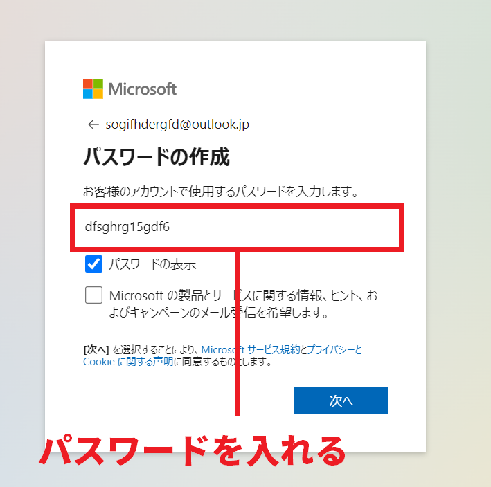
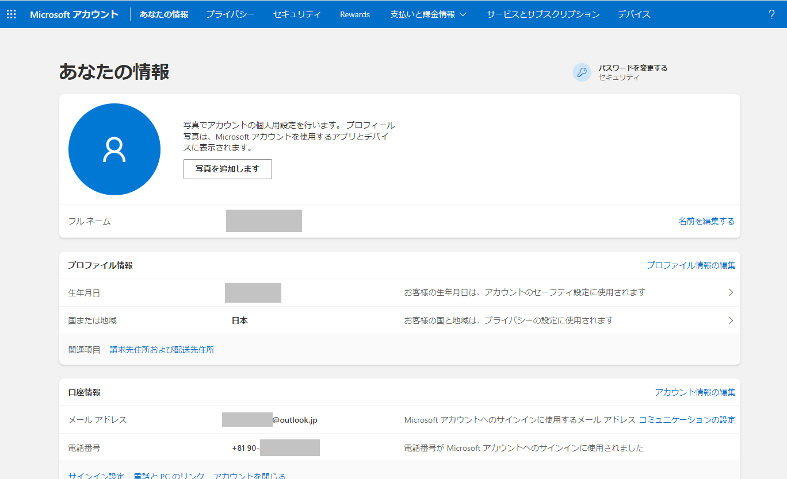

Microsoftアカウントは様々なMicrosoftのWebサービスが利用できる「無料で作れるアカウント」のこと。 Microsoftアカウントを作ることでOutlookメール、オンラインストレージのOneDrive、OfficeソフトのwordやExcelなど、10種類以上のサービスが無料で利用できるようなります。
さらにedgeやBingなどのMirosoft製のブラウザを使用するとき、Mirosoftアカウントでサインインしていれば「お気に入り」をどこでも確認することが出来ます。
このページでは、ちょっとわかりづらいけれども、持っているととても役立つMicrosoftアカウントについて詳しく解説していきます。
Microsoftアカウントはマイクロソフト社が発行する無料IDになっています。無料なのでアカウント発行にお金はかかりませんし、実は何個も作ることが出来ます。 自分の分だけのMicrosoftアカウント、家族用のMicrosoftアカウントなども簡単に作れます。作成はMicrosoftアカウントを作成する専用ページで行います。速ければ5分もかからず作成することが出来ます。
Microsoftアカウントは基本的にマイクロソフトが提供するサービスを使う時に必要になってきます。そのため関連するサービスを使う人でなければ作る必要はありません。 ただし、関連サービスを使う人にとってはアカウントを作らないとサービスの利用ができないものもありますし、アカウントがあることでそのサービスを便利に利用できるようにもなります。
実際にMicrosoftアカウントが必要なサービスを紹介してみましょう。
まずWebメール版のOutlookメール。これはmicrosoftアカウントが必要になります。またWebサービス版のWordやExcelを使う時もmicrosoftアカウントが要ります。 同様にスカイプ、オンラインストレージのOneドライブについてもmicrosoftアカウントが要ります。
これらのサービスはどれも1つのmicrosoftアカウントを作るだけで無料で活用することができます。
また意外かもしれませんが、マイクロソフトが提供している人気ゲーム「マインクラフト」にもmicrosoftアカウントが必要になります。 その他にもMicrosoftストアでの購入の際にもアカウントが要ります。Xboxも同様にmicrosoftアカウントが必要になります。
このようにmicrosoftアカウントはマイクロソフトが提供しているサービスに関わるときに必要になってきます。

EdgeやBingなどのMirosoft製のブラウザソフトを利用する場合も、microsoftアカウントでサインインしておけばお気に入り情報を常に共有することが出来ます。 普段使わないパソコンでブラウザを使用した時で、お気に入りしておいたサイトを調べたい場面などでmicrosoftアカウントが活躍します。 ただし、必ずサインインしなければならないということではなく、必要があればサインインすると便利だという事になります。
またサインインした場合は、どのデバイスであってもmicrosoftアカウントに履歴情報などが残ります。外出先のパソコンでmicrosoftアカウントにサインインしたら必ずログアウトする 癖を付けておきましょう。
Microsoftアカウントの登録はとても簡単で、わずかな情報を入れるだけでアカウントが作れます。5分もあればアカウントを開設できるでしょう。
microsoftアカウントを作成できる登録ページは以下になります。
まずは特設ページから「アカウント作成」をクリックしましょう。

microsoftアカウントを作成する際は、最初にメールアドレスを作ります。ここで登録するメールアドレスはOutlookメールのメールアドレスにもなります。

次にパスワードを決めます。

パスワードをいれた後は「私はロボットではありません」のビジュアルチェックを行うだけでmicrosoftアカウントが作れてしまいます。 ちなみにここで登録したメールアドレスはサインイン時のユーザーIDになります。
本当に基本的なものしか登録しないので、microsoftアカウントを作った後は出来れば「生年月日」「携帯番号」などの諸所の情報を入れておくと良いでしょう。 また今後、microsoftのサービスを使うたびに必要になるので、メールアドレスとパスワードはどこかに控えておくと良いでしょう。
登録したパスワードは、microsoftアカウントの管理画面から変更することが出来ます。 先程も紹介したMicrosoftアカウントの特設ページからサインインすることで管理画面に入れます。 また登録情報を追加する場合も特設ページから追加ができるようになっています。

生年月日や電話番号の登録ができます。これは主に2段階認証や、パスワード忘れの場合の確認などセキュリティ面の登録情報になります。
クレジットカードを登録したり、Webサービスの有料プランに加入した場合のサブスクリプション情報を確認することが出来ます。
edgeやBingなどのブラウザの履歴情報、検索情報。各アプリケーション単位のプライバシー設定。パスワードやサインイン情報の確認などができます。
Microsoftアカウントで提供されているサービスにどんなものがあるのか、より詳しく説明してみましょう。
Webメール版のOutlookメールは無料で提供されています。WebメールはGoogleのGmailが人気になっていますが、違うメールアドレスを作りたい場合は Outlookメールは最適かもしれません。ちなみに、このOutlookメールはパソコンに標準搭載されているソフト版の「Outlook2021」とは別のサービスになります。 無料で作れるフリーメールであり、Webメール機能を持っているOutlookのサービスになります。
Oneドライブと呼ばれるオンラインストレージでは合計15GBまでのデータを保存できます。これもmicrosoftアカウントを作るだけでサービスに入れます。 WordやExcelで作ったデータは当然のこと、スマホで撮影したフォトやムービーも保存できます。
オフィスソフトであるワードやエクセルもmicrosoftアカウントに入る無料でソフトを起動できるようになっています。 ただし無料のWebサービス版では一部機能が限定されています。
microsoftアカウントと同様のサービスにGoogleが提供する「Googleアカウント」があります。Googleアカウントも 無料で誰でも作成することができます。さらにWebメールであるGmailや、WordやEXCELと同等の機能をもったGoogleドキュメントやGoogleスプレッドシートも無料で起動できます。

demiglaze
Web制作を始めて約19年になります（HTML/css、Photoshop、Webマーケティング）。2005年から当サイトの運営を開始。 これまでに300個以上のドメインを取得、10社を超えるレンタルサーバーを利用してきました。